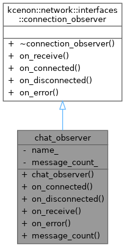
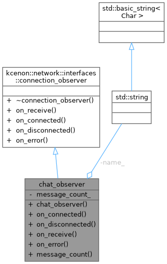

Custom observer that handles all connection events. More...


Public Member Functions | |
| chat_observer (const std::string &name) | |
| auto | on_connected () -> void override |
| Called when the connection is established. | |
| auto | on_disconnected (std::optional< std::string_view > reason) -> void override |
| Called when the connection is closed. | |
| auto | on_receive (std::span< const uint8_t > data) -> void override |
| Called when data is received from the server. | |
| auto | on_error (std::error_code ec) -> void override |
| Called when an error occurs. | |
| auto | message_count () const -> int |
 Public Member Functions inherited from kcenon::network::interfaces::connection_observer Public Member Functions inherited from kcenon::network::interfaces::connection_observer | |
| virtual | ~connection_observer ()=default |
Private Attributes | |
| std::string | name_ |
| int | message_count_ = 0 |
Detailed Description
Custom observer that handles all connection events.
This demonstrates the recommended pattern for handling client events. All events go through a single object, making it easy to maintain state.
- Examples
- observer_pattern.cpp.
Definition at line 51 of file observer_pattern.cpp.
Constructor & Destructor Documentation
◆ chat_observer()
|
inlineexplicit |
- Examples
- observer_pattern.cpp.
Definition at line 53 of file observer_pattern.cpp.
Member Function Documentation
◆ message_count()
|
inlinenodiscard |
- Examples
- observer_pattern.cpp.
Definition at line 77 of file observer_pattern.cpp.
References message_count_.
◆ on_connected()
|
inlineoverridevirtual |
Called when the connection is established.
This is called after a successful connection to the server.
Implements kcenon::network::interfaces::connection_observer.
- Examples
- observer_pattern.cpp.
Definition at line 55 of file observer_pattern.cpp.
References name_.
◆ on_disconnected()
|
inlineoverridevirtual |
Called when the connection is closed.
- Parameters
-
reason Optional reason for the disconnection.
Note
The reason may be empty for normal disconnections.
Implements kcenon::network::interfaces::connection_observer.
- Examples
- observer_pattern.cpp.
Definition at line 59 of file observer_pattern.cpp.
References name_.
◆ on_error()
|
inlineoverridevirtual |
Called when an error occurs.
- Parameters
-
ec The error code describing the error.
Implements kcenon::network::interfaces::connection_observer.
- Examples
- observer_pattern.cpp.
Definition at line 73 of file observer_pattern.cpp.
References name_.
◆ on_receive()
|
inlineoverridevirtual |
Called when data is received from the server.
- Parameters
-
data The received data as a span of bytes.
Thread Safety
May be called from I/O threads. Implementation must be thread-safe.
Implements kcenon::network::interfaces::connection_observer.
- Examples
- observer_pattern.cpp.
Definition at line 67 of file observer_pattern.cpp.
References kcenon::network::message, message_count_, and name_.
Member Data Documentation
◆ message_count_
|
private |
- Examples
- observer_pattern.cpp.
Definition at line 81 of file observer_pattern.cpp.
Referenced by message_count(), and on_receive().
◆ name_
|
private |
- Examples
- observer_pattern.cpp.
Definition at line 80 of file observer_pattern.cpp.
Referenced by on_connected(), on_disconnected(), on_error(), and on_receive().
The documentation for this class was generated from the following file:
- examples/observer_pattern.cpp